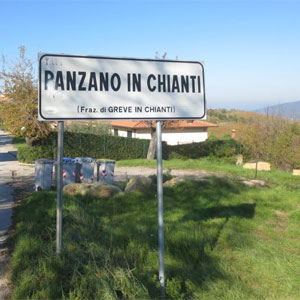
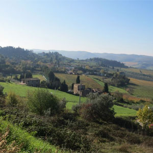
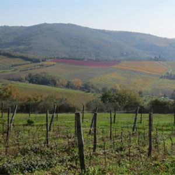
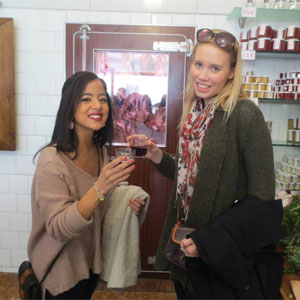
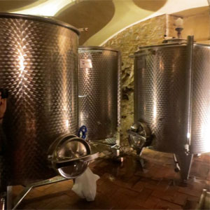
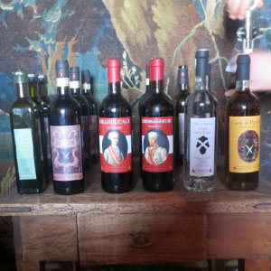

An American in Paris
Chianti, Italy
The Chianti region of Italy is in Ceneral Tuscany, and it is famous for its delicious wine. It was definitely my favorite day trip of all!
 Welcome to Chianti!
 Beautiful country-side views
 An abandoned vineyard. In the background, you can see a vineyard that makes red wines.
 Inside most famous buchery in Chianti, Panzano.
 Chianti Classico Wine in the making
 We were lucky to try all of these, in the wine makers villa.